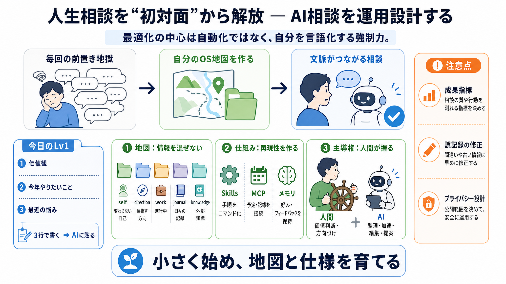

Claude Code入門ガイド｜インストールから基本操作・活用方法まで解説
# Claude Code入門ガイド｜インストールから基本操作・活用方法まで解説. AIとの対話でコードを書く時代が本格的に始まりました。Claude Codeは、自然な会話でプログラミングができる新しいタイプの開発支援ツールです。この記事…

Claude Code と仕組み（Skills／MCP／メモリ）で、自己理解を運用する体験談を「再現しやすい設計」に圧縮します。
要点：最適化の中心は自動化ではなく、自分を言語化する強制力です。
AIに相談すると、毎回「状況説明」から始まって疲れます（初対面問題）。
AIに渡すのは“人生の中身”だけでなく、参照すべき情報の地図（分類の軸）です。
3か月運用で最大の効果は「自動化」ではなく、書くことによる言語化の強制力でした。
Claude Code の Skills で、相談やタスク更新を“コマンド化”して運用を安定させます。
情報を混ぜないために、参照目的で時制の軸に分けます。するとAIが“何を重視すべきか”迷いにくくなります。
MCPでカレンダー等と接続し、作業と記録が運用サイクルに入る状態を作ります。
メモリ機能で、好みやフィードバックをAI側に保持させます。これで毎回の“初対面前置き”が軽くなります。
ゴール（どこへ行くか）は人間が握るべきで、AIは実行や提案（どう進めるか）を担うのが安全です。
自己理解が曖昧だと助言もぼやけるため、価値観や判断基準という“見えないルール”を明文化します。
良い点は実用性と運用品質、注意点は測定不足と誤記録・固定化などのリスクです。
まずはメモに3行書き、AIへ貼ってみてください（Lv1）。実装は小さく、地図と仕様を育てる。
# Claude Code入門ガイド｜インストールから基本操作・活用方法まで解説. AIとの対話でコードを書く時代が本格的に始まりました。Claude Codeは、自然な会話でプログラミングができる新しいタイプの開発支援ツールです。この記事…
# Claude Code 使い方・初期設定・料金がわかる完全ガイド2026. 複数事業の経営を通じてAI活用を推進。ChatGPT・Claude・Geminiを自社業務に導入し、50社以上のAI研修を監修。現場目線のAI導入支援を行う実践…
Go to list of users who liked. # Claude Codeに人生を管理させて3ヶ月、一番効いたのは自動化じゃなかった. Last updated at Posted at 2026-06-11. ## はじめに…
Claude Codeのトークン使用量を平均65%削減するOSSミドルウェア。ファイルインデックスと学習メモリでコンテキスト精度も向上。導入方法と実測データを解説 🤖 · 2026.03.29 · Yeachan-Heo/oh-my-cla…
# Claude Codeとは？できること・使い方・活用法を初心者向けに徹底解説. 4. Claude Codeとは？できること・使い方・活用法を初心者向けに徹底解説. そんな中、注目を集めているのが**Claude Code（クロードコー…